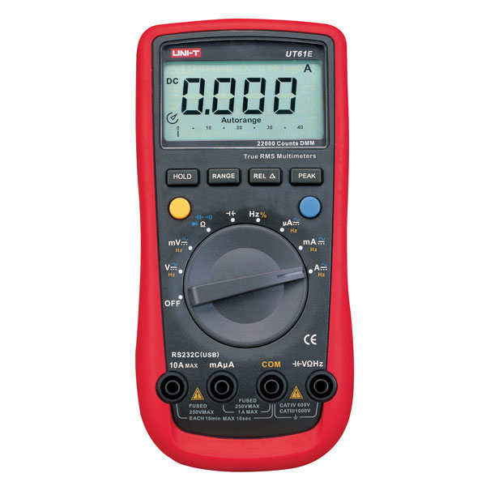

La Piézoélectricité
Definition :
“La piézoélectricité est la propriété que possèdent certains corps de se polariser électriquement sous l’action d’une contrainte mécanique et réciproquement de se déformer lorsqu’on leur applique un champ électrique.”
Expérience 1
Nous cherchons à calculer l'énergie que nous pouvons produire à l'aide de cellules piezoélectriques.
Application à la marche des êtres humains
Protocole :
Nous allons "scotcher" une cellule piezoélectrique en dessous de la semelle de Bilal et mesurer le voltage produit par une marche de 10 secondes. Nous allons donc utiliser le logiciel Latis Pro afin de mesurer la tension et de tracer des graphiques représentant le profil de marche. De plus nous allons déterminer quelle est la zone du pied la plus intéressante pour placer la cellule afin de mesurer plus facilement l'intensité dans un second temps.
Matériel :
Cellule piezoélectrique :
Centrale Latis :
Du scotch :
et Bilal :
Résultats :
Voici le graphique de la tension en fonction du temps lorsque Bilal marche avec la cellule collée sous l'avant de sa chaussure :

On peut observer que l'on atteint tout juste 1V au maximum à chaque pas. Nous allons voir, si nous pouvons obtenir de meilleurs résultats au milieu de la chaussure.
Voici le graphique de la tension en fonction du temps lorsque Bilal marche avec la cellule collée sous le milieu de sa chaussure :

Cette fois-ci, on atteint 3V au maximum à chaque pas, le milieu du pied est donc bien plus aproprié afin de placer une cellule. Nous allons maintenant voir si nous obtenons des résultats
encore meilleurs sous le talon.
Voici le graphique de la tension en fonction du temps lorsque Bilal marche avec la cellule collée sous le talon de sa chaussure :

Sous le talon, le voltage est légèrement plus faible, on atteint 2V à chaque pas.
Ensuite, nous avons décidé de tester une cellule installée à l'intérieur au milieu de la chaussure
:

Le résultat est très décevant, on atteint à peine 1V. Il n'est donc pas nécessaire de tester aux autres endroits de la chaussure.
Conclusion :
Nous pouvons conclure alors que la piezo électricité permet de produire un voltage plutôt élevé, nous allons donc continuer les expériences afin de mesurer l'intensité quand la cellule est placée au milieu du pied pour obtenir les meilleurs résultats possibles. Grâce à ces résultats, nous pourrons calculer la puissance générée par la cellule piézo-électrique.
Expérience 2
Protocole :
Nous allons brancher la cellule piezo-électrique en série avec une résistance de 10Ω (c'est le plus petit que nous avons) et en dérivation avec la centrale Latis. Nous allons donc mesurer un voltage et nous pourrons en déduire une intensité. Nous installerons la cellule sous le milieu de la chaussure de Bilal, qui marchera pendant 10 secondes.
Matériel :
Cellule piezoélectrique :
Centrale Latis :
Ampèremètre :

Du scotch :
et Bilal :
Comment l'expérience à échouée
Après avoir fait le montage, Bilal a commencé à marcher pour faire l'expérience mais la centrale Latis restait déséspéremment à 0V. Il s'avère que l'intensité est si faible que même avec une petite résistance de 10Ω, elle ne soit pas calculable avec à partir de la tension (\(U=R\times I\)). Nous allons donc chercher une formule qui nous permettra de calculer une intensité, ou bien une autre grandeur qui nous permettra de juger de l'efficacité d'une cellule piezoélectrique afin d'alimenter un objet connecté.
Expérience 3
La Formule
Nous avons trouvé une formule permettant de calculer la charge électrique générée par une cellule piézo-électrique pour une pression donnée sur un matériau donné. La voici : $$Q = d_{33} \times F$$ où \(d_{33}\) est le coefficient de piezo-électricité propre au matériau de la cellule et F la force appliquée, aussi appelée pression ou même stress. Nous l'avons trouvée sur le site American Piezo
Protocole Mathématique et Expérimental :
Nous allons prendre un poids de référence que nous exprimerons en Newton. Ce poid sera appliqué à la surface de la cellule, appelée ici surface de référence, ce qui nous donnera la pression de référence. La cellule étant en quartz, nous connaissons \(d_{33}\) . La charge électrique sera donc proportionnelle au poids car la surface et le coefficient sont constants.
Calculs
On a F la pression appliquée par Bilal à chaque pas (on suppose qu'il applique la moitié de son poid) sur la surface de la cellule, \(d_{33}\) le coefficient piezoélectrique qui dépend du matériau de la cellule (ici du quartz) et Q la charge électrique
générée par la contrainte mécanique des pas de Bilal.
Or comme nous l'ont appris les documents scientifiques (allez voir la bibliographie pour plus d'informations) :
\(Q = d_{33} \times F\)
On sait que \(F = {196.2N \over 2.8\times 10^{-15}m^2}\) et \(d_{33} = 2.33\times 10^{-12}\)
Par conséquent, dans le cas de Bilal, la charge en Coulombs générée par Bilal à chaque pas est de \(1.456\times 10^{-6}C\)
Or \(1C = 1000mAs\) donc Bilal génère \(1.456\times 10^{-3}mAs\) ce qui nous fait donc à peu près \(5mAh\).
Ce résultat est absolument insignifiant (pour rappel une batterie de téléphone se situe à 3500mAh), rendant l'utilisation de la piezo-électricité pour alimenter des objets connectés totalement inefficace, à petite échelle du moins.
Conclusion sur la piezoélectricité :
Nous avons vu grâce à nos expériences que l'on peut en effet produire de l'énergie grâce à des cellules piézoélectriques. Cependant, la cellule testée est trop peu efficace afin d'être utilisée dans le cadre d'un usage personnel (marche). Nous
pouvons cependant aussi envisager l'utilisation de condensateurs afin d'accumuler de l'énergie pour alimenter de manière ponctuelle un objet connecté.
Pour aller plus loin, nous pourrions imaginer d'autres conditions d'utilisations :
par exemple des routes ou même un sol très fréquenté bardé de cellules piézoélectriques. La contrainte mécanique d'une foule ou de plusieurs voitures serait peut-être suffisante afin d'alimenter des objets connectés situés à proximité